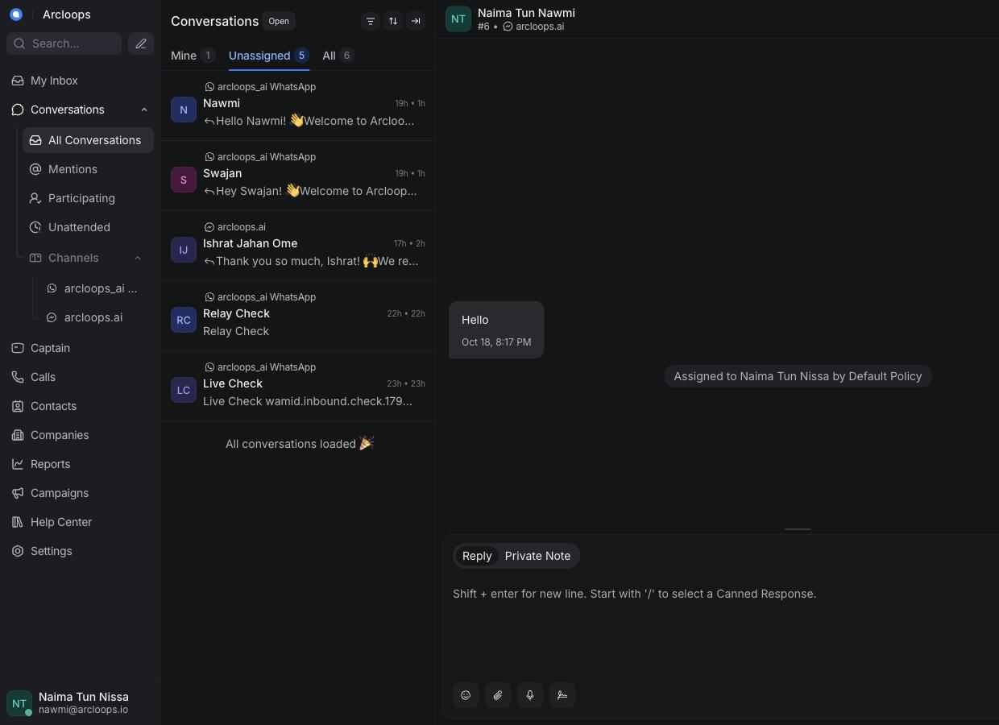
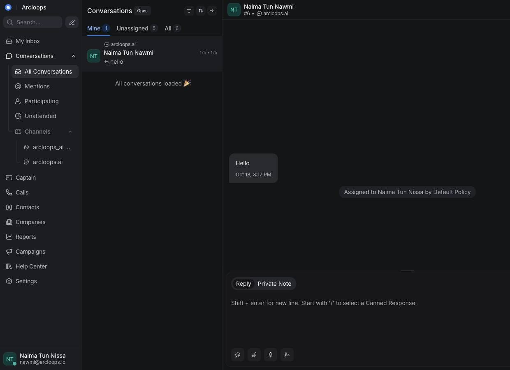

Real senders
People arrive with their names. The desk does not invent a placeholder when a profile can be read.
Product
A conversation list, a thread, and an agent that answers before the queue goes cold. The rest of the desk stays out of the way.

List
Mine, unassigned, and all sit on one row. Each line shows the channel, the person, and the last thing they said. Opening a thread does not mean losing the rest of the queue.
People arrive with their names. The desk does not invent a placeholder when a profile can be read.
A new message can be answered at once, then handed to a person without leaving the thread.
Assignment and notes keep the next person inside the same story, on the same channel.
How it looks
Open the desk and the work is already arranged. The left side names the inboxes. The middle is everyone who wrote. The thread you are answering stays open beside that list, so switching channels never means switching products.
Each inbox is listed by the name the business already uses. WhatsApp and Messenger are there now. Website chat, email, SMS, Telegram, Line, Instagram, and an API channel join that same column when they are connected. Search sits above them.
Each row is a person, a channel, and the last line they sent. Mine, Unassigned, and All filter the same list. Opening one thread leaves the others in place.
The open conversation shows the history and a box to write. The agent’s reply and a person’s reply live in that same thread, then go back out on the customer’s channel.
A teammate can see who is waiting without leaving the message they are writing. Nothing important is buried in a second tool or a notification on a phone.
Thread
A WhatsApp message is answered on WhatsApp. Email stays email. A website chat stays on the site. The team only changes rooms inside acxio.
